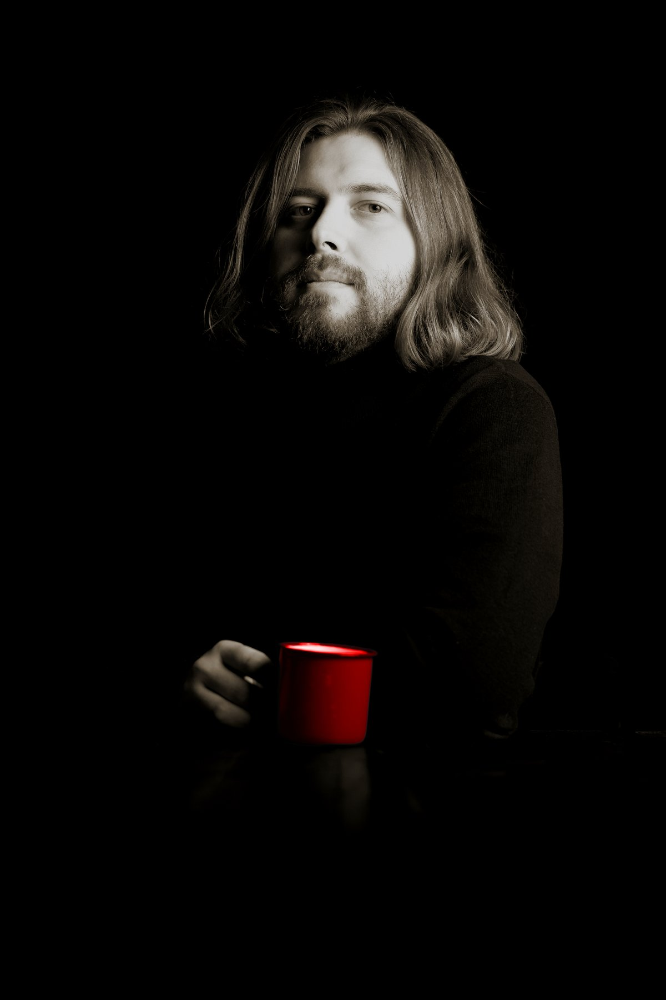

Révéler
Ce qui vous rend unique.
Comprendre ce qui distingue votre projet. Ce qui mérite d'être vu.
Pas ce que vous pensez devoir dire. Ce que les autres ne peuvent pas dire à votre place.

Le monde de la
communication
est gris.
Pas mauvais. Pas même fade. Juste gris. Uniforme.
Saturé de messages qui se ressemblent, de campagnes qui s'oublient, d'institutions qui produisent sans jamais émerger.
Le problème n'est pas le manque de contenu. C'est l'absence de couleur. Ce détail, ce dispositif, cette idée qui fait qu'on s'arrête, qu'on regarde, qu'on se souvient.
Mon métier, c'est de trouver votre couleur. Et de la rendre impossible à ignorer.
Donnez sa couleur à votre projet.
Encore faut-il savoir la trouver, et savoir comment la faire exister.
Comprendre ce qui distingue votre projet. Ce qui mérite d'être vu.
Pas ce que vous pensez devoir dire. Ce que les autres ne peuvent pas dire à votre place.
Un message, une signature, un territoire visuel et verbal qui tient dans le temps et fonctionne sur tous les formats.
Construire le dispositif qui fait exister l'idée au-delà du brief. Penser diffusion autant que création.
Physique, digital, social. Souvent les trois à la fois.